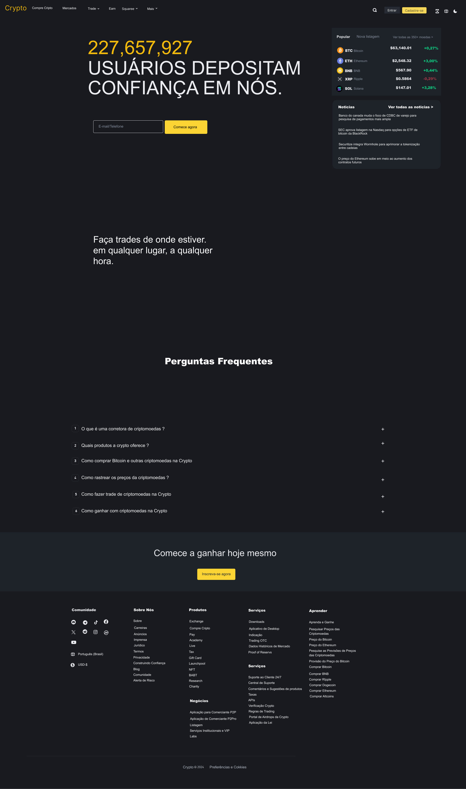
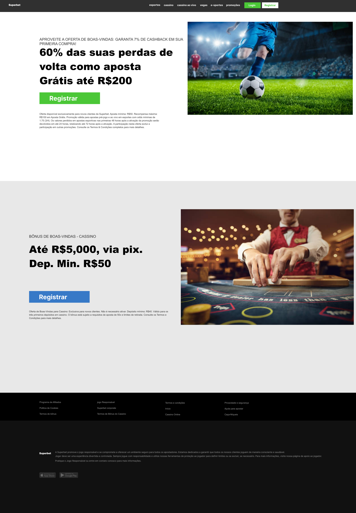
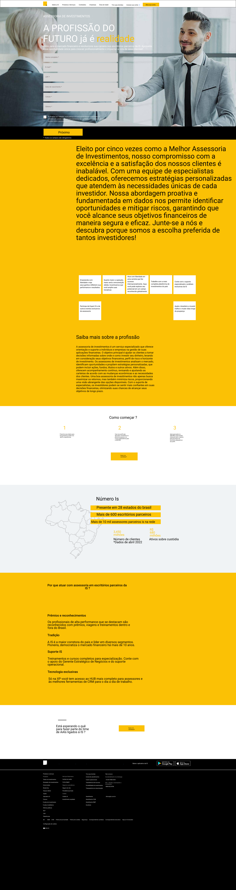
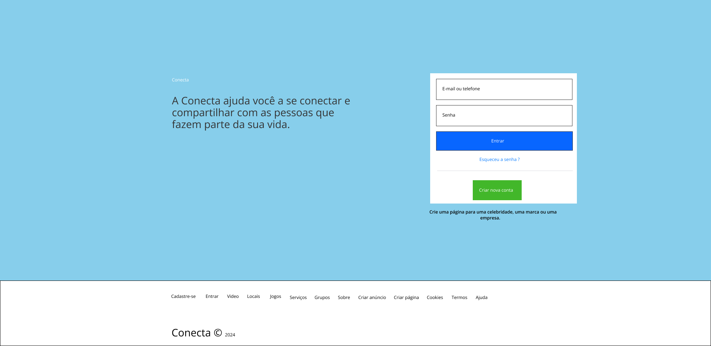
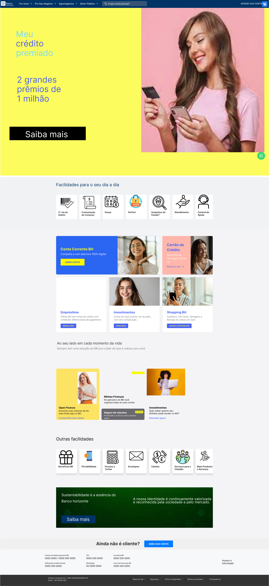
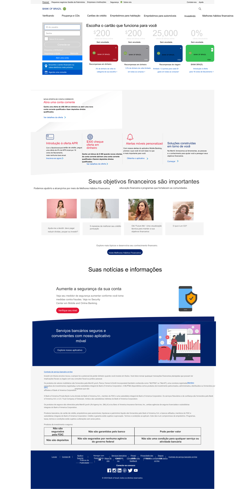
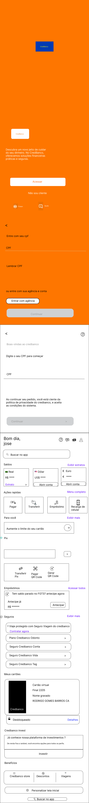

Projetos em destaque
Crypto é uma plataforma inovadora
de criptomoedas desenvolvida para
facilitar a troca, compra e venda de
ativos digitais de forma segura e
intuitiva. Com o crescimento
exponencial do mercado de
criptomoedas, nosso objetivo foi
criar uma interface amigável que
atendesse tanto iniciantes quanto
investidores experientes.
Visualizar

é uma instituição financeira comprometida em oferecer soluções
financeiras acessíveis e inovadoras para pessoas e empresas.
Com uma abordagem centrada no cliente, buscamos transformar
a experiência bancária, proporcionando serviços que vão além das
transações tradicionais.
Visualizar

Superbet é uma plataforma de apostas online desenvolvida para proporcionar
uma experiência de jogo intuitiva, segura e envolvente. O projeto nasceu da
necessidade de modernizar o acesso às apostas esportivas e jogos de cassino,
oferecendo aos usuários uma interface amigável e funcionalidades inovadoras.
Visualizar

Loja virtual é uma loja virtual projetada para oferecer uma experiência
de compra online simples, intuitiva e agradável. O projeto visa atender
a um público amplo, desde consumidores que buscam produtos específicos
até aqueles que desejam explorar novas opções em diversas categorias.
Visualizar

Descubra o futuro das suas finanças com investimentos,
uma plataforma de investimentos inovadora projetada
para tornar o processo de investir acessível, transparente
e eficiente.
Visualizar

Conecta é a sua nova rede social, projetada para unir pessoas, ideias e experiências.
Aqui, você pode compartilhar momentos, interagir com amigos e descobrir comunidades
que refletem seus interesses.
Visualizar

No Banco, estamos comprometidos em transformar a forma como você lida com suas finanças.
Oferecemos soluções bancárias modernas, acessíveis e personalizadas para atender às suas
necessidades, seja para o dia a dia ou para grandes conquistas.
Visualizar

No Bank of Brazil, estamos dedicados a oferecer soluções financeiras inovadoras e acessíveis,
atendendo às necessidades de nossos clientes com segurança e eficiência. Nossa missão é
proporcionar uma experiência bancária que facilite a gestão de suas finanças e impulsione seus
objetivos.
Visualizar

No CredBanco, estamos aqui para transformar a sua experiência financeira.
Nossa plataforma foi projetada para oferecer serviços bancários modernos,
acessíveis e seguros, ajudando você a gerenciar suas finanças de forma
simples e eficaz.
Visualizar

o Banco Popular, acreditamos que o acesso a serviços financeiros de qualidade
deve ser simples e acessível a todos. Nossa plataforma foi desenvolvida para
oferecer uma experiência bancária intuitiva e segura, ajudando você a gerenciar
suas finanças com facilidade.
Visualizar